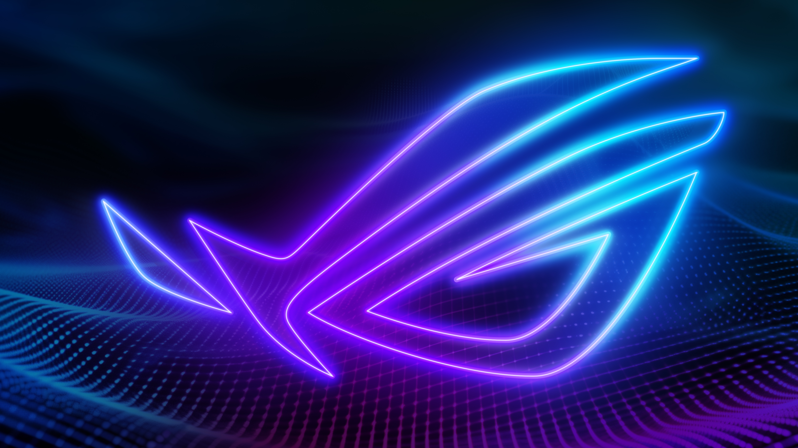

من به ماشینها یاد میدهم که ببینند، بفهمند و خلق کنند. با بیش از ۵ سال تجربه در مرزهای هوش مصنوعی، تمرکز من روی توسعه سیستمهای هوشمند با استفاده از LLMs، Computer Vision و MLOps است.
بیش از ۵ سال است که در مرزهای هوش مصنوعی قدم میزنم. من معتقدم کدهای تمیز و معماری شبکههای عصبی عمیق، هنر دنیای مدرن هستند. هدف من ساخت محصولاتی است که زندگی انسانها را هوشمندتر کند. از آزمایشگاههای تحقیقاتی تا محیطهای Production واقعی، همیشه دنبال راهحلهایی بودهام که هم از نظر علمی محکم باشند و هم از نظر مهندسی قابل اتکا.
پروژه
سال تجربه
دانشگاه صنعتی شریف
پایاننامه: بهینهسازی مدلهای زبانی بزرگ با LoRA.
دانشگاه صنعتی اصفهان
پروژه پایانی: تشخیص ناهنجاری در ترافیک شبکه با استفاده از یادگیری ماشین.
مشتری راضی
مدل دیپلوی شده
Data Processing
وقتی پشت لپتاپ نیستم...
"هوش مصنوعی خوب، هوشی است که انسان را قویتر کند، نه جایگزین او شود. من برای این هدف کد مینویسم."
رهبری تیم ۵ نفره برای توسعه یک مدل بینایی ماشین صنعتی. کاهش خطای تولید به میزان ۲۲٪ با استقرار روی لبه (Edge AI). طراحی معماری کامل Pipeline از جمعآوری داده تا استقرار روی دستگاههای Jetson Nano.
طراحی و آموزش مدلهای پردازش زبان طبیعی (NLP) برای تحلیل احساسات مشتریان. یکپارچهسازی مدلها با بکاند میکروسرویس از طریق FastAPI و Dockerization.
طراحی سیستم Recommendation برای فروشگاههای آنلاین و پردازش بیش از ۱۰ میلیون رکورد در روز با PySpark. افزایش ۲۵٪ نرخ تبدیل کاربر به خریدار در اولین ماه استقرار.
توسعه خزندههای وب (Web Scrapers) پیشرفته برای جمعآوری دادههای ساختاریافته. اتوماسیون فرآیندهای دیتابیس و طراحی داشبوردهای تحلیلی با Pandas و Matplotlib.
مشارکت در پژوهشهای مرتبط با شبکههای عصبی کانولوشنال (CNN). جمعآوری و پاکسازی دیتاسِتهای تصویری برای مقالات علمی.
مشارکتهای علمی در معتبرترین ژورنالها و کنفرانسهای بینالمللی
این مقاله روشی نوین برای کاهش مصرف حافظه در هنگام Fine-tune کردن مدلهای زبانی با پارامتر بالا روی دستگاههای لبه (IoT) پیشنهاد میدهد که باعث کاهش ۶۰ درصدی مصرف VRAM میشود.
مشاهده مقالهمعرفی یک معماری هیبریدی بر پایه ViT و CNN برای تشخیص بلادرنگ نقصهای تولیدی در خطوط مونتاژ با نرخ فریم بالا و دقت ۹۹.۲ درصد.
مشاهده مقالهیک چارچوب مبتنی بر یادگیری تقویتی عمیق (DQN) برای زمانبندی هوشمند چراغهای راهنمایی شهری که منجر به کاهش ۳۰ درصدی زمان انتظار در تقاطعهای شلوغ شد.
مشاهده مقاله
Fine-tune کردن مدل Llama-3 روی دیتاسِتهای اختصاصی بانکی برای پاسخگویی به مشتریان با پیادهسازی معماری RAG. کاهش ۴۰٪ در زمان پاسخدهی اپراتورهای انسانی.
مدل Image Segmentation با استفاده از معماری U-Net برای تشخیص دقیق مرز تومورها در تصاویر MRI. دقت ۹۷٪ روی دیتاسِت BraTS2023 و تأیید شده توسط متخصصان رادیولوژی.
"آریا یک درک فوقالعاده از الگوریتمهای پیچیده دارد. کدهای او بسیار تمیز است و مدلی که برای خط تولید ما آموزش داد، فراتر از انتظار عمل کرد. همکاری با او یک تجربه حرفهای واقعی بود."
"سیستم توصیهگری که آریا برای پلتفرم ما ساخت، نرخ تبدیل کاربر به خریدار را ظرف یک ماه ۲۵٪ افزایش داد. علاوه بر مهارت فنی، توانایی توضیح مفاهیم پیچیده به تیم غیرفنی ما واقعاً ارزشمند بود."